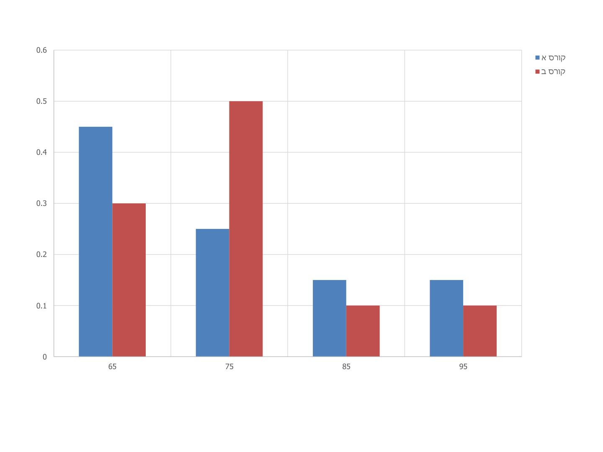

משתנה מקרי בדיד — תוחלת ושונות
⏱ זמן משוער: 50 דק'
0. האינטואיציה — מהמשחק אל מספר אחד
עד עכשיו חישבנו הסתברות למאורע בודד: מה הסיכוי שהמטרה תיפגע, מה הסיכוי לשלוף 3 תקינים. אבל שאלות אמיתיות — הימור ברולטה, בחירה בין השקעות, תמחור משחק מזל — דורשות משהו אחר: מספר אחד שמסכם התפלגות שלמה. אם אשחק ברולטה שוב ושוב, כמה ארוויח (או אפסיד) בממוצע לסיבוב? המספר הזה הוא התוחלת, ולידו יש מספר שני שמודד את הסיכון — השונות.
התרגול מדגיש שבזכות חוק המספרים הגדולים, התוחלת מהווה קירוב לממוצע של סדרת תוצאות ארוכה — ולכן היא בדיוק הכלי לתחזיות של רווח והפסד. במבחן של ד"ר סעד זו שאלה 3 הקבועה: משחק שליפות, פונקציית הסתברות, תוחלת ושונות.
מקור: class04.pptx עמ' 10
1. משתנה מקרי בדיד ופונקציית ההסתברות
משתנה מקרי בדיד (Discrete Random Variable) הוא משתנה שמקבל ערכים בודדים וסופיים מתוך מרחב המדגם של הבעיה — המשתנה לא יכול לקבל ערכים שבין המספרים הבודדים. הדוגמה מהתרגול: בסוכנות וולבו מספר המכוניות הנמכרות מדי יום נע בין 0 ל-5. X הוא המשתנה המקרי הבדיד שמקבל את הערכים 0, 1, 2, 3, 4, 5 באופן מקרי.
ההבדל ממשתנה מקרי רציף: רציף יכול להכיל תחום ערכים אפשריים. בדוגמת התרגול — בוחרים ילד אקראי מתוך 100 תלמידים ומודדים את גובהו: קבוצת האפשרויות אינסופית, ולכן לא ניתן להשתמש בטבלה (יש אינסוף ערכים אפשריים). בהתפלגויות רציפות נטפל ביחידה 5.
עבור משתנה בדיד בונים פונקציית הסתברות: טבלה של כל ערכי המשתנה וההסתברות של כל ערך. וכלל הברזל של המרצה — כלי ביקורת חובה בכל פתרון:
תרגיל חימום מהתרגול — 3 מטבעות
תרגיל (תרגול 04, עמ' 11): X הוא משתנה מקרי המבטא את מספר הפעמים בהם תתקבל התוצאה "ראש" (H) בהטלה של 3 מטבעות הוגנות. בנו את פונקציית ההסתברות וחשבו את התוחלת והשונות.
פתרון שנכתב לאתר; במקור אין פתרון.
8 תוצאות שקולות להטלת 3 מטבעות; סופרים כמה מהן נותנות כל ערך של X:
| x | 0 | 1 | 2 | 3 |
|---|---|---|---|---|
| p(x) | 1/8 | 3/8 | 3/8 | 1/8 |
ביקורת: 1/8 + 3/8 + 3/8 + 1/8 = 1 ✓
E(x) = 0·(1/8) + 1·(3/8) + 2·(3/8) + 3·(1/8) = 12/8 = 1.5
V(x) = (0−1.5)²·(1/8) + (1−1.5)²·(3/8) + (2−1.5)²·(3/8) + (3−1.5)²·(1/8)
V(x) = 0.28125 + 0.09375 + 0.09375 + 0.28125 = 0.75
תוצאה הגיונית: התוחלת 1.5 — בדיוק אמצע הטווח, כי המטבעות סימטריות.
מקור: class04.pptx עמ' 8-9, 11
2. תוחלת ושונות — והקשר לממוצע ולשונות התיאוריים
עבור התפלגויות בדידות מגדירים תוחלת (Expected value / Mean, מסומנת E או μ) ושונות בנוסחאות:
E(x) = Σ xᵢ·pᵢ
V(x) = Σ (xᵢ − E(x))²·pᵢ
כאשר xᵢ — תצפית אפשרית, pᵢ — הסתברות התצפית. התוחלת היא ממוצע משוקלל של כל הערכים האפשריים, כשכל ערך משוקלל בהסתברות שלו — בניגוד לממוצע החשבוני הרגיל שמחושב בסיכום סדרת ערכים וחלוקה במספרם. השונות היא ממוצע משוקלל של ריבועי הסטיות מהתוחלת.
וכאן הנקודה שהמרצה מדגיש: הממוצע והשונות המוכרים מהסטטיסטיקה התיאורית הם מקרים פרטיים של התוחלת והשונות — מתקיימים כאשר ההסתברות לכל תצפית שווה. אם יש n תצפיות ולכל אחת הסתברות 1/n:
E(x) = x₁·(1/n) + x₂·(1/n) + … + xₙ·(1/n) = Σxᵢ / n = x̄
VAR(x) = σ² = Σ(xᵢ − x̄)² / n
כלומר: תוחלת ⊃ ממוצע, שונות של משתנה מקרי ⊃ שונות תיאורית. שורש השונות הוא סטיית התקן — σ = √V(x) — ובה נשתמש כשנרצה "סיכון" באותן יחידות כמו הכסף.
מקור: lec03-04-probability-discrete-distributions.pdf עמ' 7 · class04.pptx עמ' 10
3. הדוגמה המרכזית מההרצאה — "מחפשים את המטמון"
הבעיה (מההרצאה): ראובן, שמעון ולוי משתתפים במשחק "מחפשים את המטמון", שבו כל המגיע למטמון זוכה בפרס. סיכויי ההגעה הם 0.9 לראובן, 0.8 לשמעון, 0.7 ללוי. הפרסים הניתנים במקרה של הגעה: 100 ש"ח לראובן ו-200 ש"ח לשמעון וללוי (לכל אחד). מצא: א. תוחלת ושונות מספר המגיעים למטמון. ב. תוחלת סכום הפרסים למגיעים.
א. מספר המגיעים — בונים פונקציית הסתברות
כל שורה נבנית מחוק הכפל (מכפלה לאורך תרחיש: מי הגיע ומי לא) ומחוק החיבור (סכימת התרחישים שנותנים אותו מספר מגיעים):
| מספר מגיעים | חישוב | הסתברות |
|---|---|---|
| 0 | 0.1·0.2·0.3 | 0.006 |
| 1 | 0.9·0.2·0.3 + 0.1·0.8·0.3 + 0.1·0.2·0.7 | 0.092 |
| 2 | 0.9·0.8·0.3 + 0.1·0.8·0.7 + 0.9·0.2·0.7 | 0.398 |
| 3 | 0.9·0.8·0.7 | 0.504 |
ביקורת: סך כל ההסתברויות של כל המצבים הוא 1.0 ✓
E(x) = 0·0.006 + 1·0.092 + 2·0.398 + 3·0.504 = 2.4
המרצה עוצר לבדיקת הגיון: תוצאה הגיונית — קרובה ל-3, כי ההסתברויות להגיע גבוהות.
V(x) = (0−2.4)²·0.006 + (1−2.4)²·0.092 + (2−2.4)²·0.398 + (3−2.4)²·0.504
V(x) = 0.03456 + 0.18032 + 0.06368 + 0.18144 = 0.46
בכתב היד הביטוי נרשם ללא חישוב סופי; ההשלמה המספרית (0.46) חושבה לאתר.
ב. סכום הפרסים — פונקציית הסתברות חדשה לאותם תרחישים
המשתנה המקרי השתנה (סכום כסף במקום מספר אנשים), ולכן בונים טבלה חדשה — אבל ההסתברויות נבנות מאותם תרחישים בדיוק:
| סכום הפרסים (ש"ח) | חישוב | הסתברות | הסבר |
|---|---|---|---|
| 0 | — | 0.006 | כולם מחטיאים |
| 100 | 0.9·0.2·0.3 | 0.054 | רק ראובן מגיע |
| 200 | 0.1·0.8·0.3 + 0.1·0.2·0.7 | 0.038 | רק שמעון או רק לוי |
| 300 | 0.9·0.8·0.3 + 0.9·0.2·0.7 | 0.342 | ראובן ושמעון או ראובן ולוי |
| 400 | 0.1·0.8·0.7 | 0.056 | שמעון ולוי מגיעים |
| 500 | — | 0.504 | כולם מגיעים (מסעיף א') |
בכתב היד מופיע בשורת 300 הערך 0.442; החישוב הנכון נותן 0.216 + 0.126 = 0.342 — ורק כך סכום העמודה הוא 1. זו בדיוק הדגמה לכוחו של כלל הביקורת "סכום ההסתברויות = 1".
E(x) = 0·0.006 + 100·0.054 + 200·0.038 + 300·0.342 + 400·0.056 + 500·0.504
E(x) = 0 + 5.4 + 7.6 + 102.6 + 22.4 + 252 = 390
תוחלת סכום הפרסים: 390 ש"ח למשחק. בכתב היד החישוב לא הושלם; ההשלמה חושבה לאתר.
מקור: lec03-04-probability-discrete-distributions.pdf עמ' 7-8
4. טרנספורמציה לינארית של תוחלת ושונות
מה קורה לתוחלת ולשונות כשעושים למשתנה טרנספורמציה לינארית — מוסיפים קבוע או מכפילים בקבוע? הכללים מהתרגול:
E(a·x + b) = a·E(x) + b
V(a·x + b) = a²·V(x)
זו בדיוק המקבילה של הכלל התיאורי שראינו ביחידה 1 (ȳ = a + b·x̄, Sy = |b|·Sx) — הגיוני, שהרי הממוצע והשונות התיאוריים הם מקרה פרטי של תוחלת ושונות. הכלל הזה חוזר במבחנים ("מבלי לחשב מחדש") וגם יחסוך לנו חישוב שלם בשאלת המבחן שבהמשך העמוד: אם X = a·W + b, אפשר לחשב תוחלת ושונות של W הפשוט ולגזור מהן את אלו של X.
מקור: class05.pptx (כללי הטרנספורמציה) · חוברת התרגילים, תרגיל 2
5. משחק הוגן — הקובייה והרולטה
משחק הוגן הוא משחק שתוחלת הרווח הכוללת בו (זכיות פחות דמי השתתפות) שווה אפס. כדי לתמחר משחק — מחשבים את תוחלת הזכייה וגובים בדיוק אותה.
שאלה 5 (תרגול 04): זורקים קובייה. אם היא נופלת על 1, 2 או 3 מרוויחים 1 ₪. אם היא נופלת על 4 או 5 מרוויחים 5 ₪. אם היא נופלת על 6 מרוויחים 35 ₪. כמה כסף צריכים לגבות עבור השתתפות במשחק ע"מ שיהיה משחק הוגן (כזה שתוחלתו שווה אפס)?
פתרון שנכתב לאתר; במקור אין פתרון.
פונקציית ההסתברות של הזכייה W:
| w (₪) | 1 | 5 | 35 |
|---|---|---|---|
| p(w) | 3/6 | 2/6 | 1/6 |
E(W) = 1·(3/6) + 5·(2/6) + 35·(1/6) = (3 + 10 + 35) / 6 = 48/6 = 8
תוחלת הזכייה 8 ₪, ולכן יש לגבות 8 ₪ להשתתפות: הרווח נטו הוא W − 8, ולפי כללי הטרנספורמציה E(W − 8) = 8 − 8 = 0 — משחק הוגן.
שאלה 4 (תרגול 04): ברולטה 37 מספרים, 18 אדומים, 18 שחורים ו-0 (ירוק). אחת מהאופציות להימור היא על מספר בודד. אם הכדור נופל על המספר הנבחר, השחקן מקבל פי 36 מהסכום שהימר עליו. אם הכדור נופל על מספר אחר, השחקן מאבד את סכום ההימור. מהי פונקציית ההסתברות של סכום הזכייה?
פתרון שנכתב לאתר; במקור אין פתרון.
נניח הימור של 1 ₪. חשוב להגדיר במדויק את המשתנה — הסכום המתקבל או הרווח נטו:
הסכום המתקבל W:
| w (₪) | 36 | 0 |
|---|---|---|
| p(w) | 1/37 | 36/37 |
הרווח נטו X = W − 1 (מקזזים את סכום ההימור):
| x (₪) | 35 | −1 |
|---|---|---|
| p(x) | 1/37 | 36/37 |
E(X) = 35·(1/37) + (−1)·(36/37) = −1/37 ≈ −0.027
המשחק אינו הוגן: התשלום "פי 36" אבל יש 37 מספרים — לכן על כל שקל שמהמרים מפסידים בממוצע כ-2.7 אגורות. יתרון הבית כולו יושב על האפס הירוק.
מקור: class04.pptx עמ' 12-13
6. השוואת השקעות — תוחלת מול סיכון
זהו דפוס שחוזר גם בחוברת וגם בתרגולים: נתונות כמה חלופות, ומשווים אותן בשני שלבים — קודם תוחלת (כמה מרוויחים בממוצע), ואם התוחלות שוות — השונות היא הסיכון. שונות גדולה = תוצאות מפוזרות = סיכון גבוה.
תרגיל 4 שאלה 3 (חוברת התרגילים): ברשותך מיליון ש"ח להשקיע לתקופה של שנה כאשר ישנן 3 חלופות:
- חלופה ראשונה — סגירה תוך קבלת 8% ריבית.
- חלופה שניה — השקעה שנותנת בסוף השנה בנוסף לקרן: 200 אלף בהסתברות 0.3, 100 אלף בהסתברות 0.4, 0 בהסתברות 0.2, והפסד 100 אלף בהסתברות 0.1.
- חלופה שלישית — השקעה בפרויקט הנותן בנוסף לקרן 280000 בהסתברות 0.5 או הפסד של 100000.
באיזו אלטרנטיבה תבחר, מה השונות של כל חלופה אפשרית?
(היחידות: אלפי ש"ח.)
חלופה א':
E(x) = 80·1 = 80 , V(x) = 0
שונות 0 — אין סיכון.
חלופה ב':
E(x) = 200·0.3 + 100·0.4 + 0·0.2 − 100·0.1 = 90
VAR(x) = 0.3·(200−90)² + 0.4·(100−90)² + 0.2·(0−90)² + 0.1·(−100−90)² = 8900
חלופה ג':
E(x) = 280·0.5 − 100·0.5 = 90
VAR(x) = (280−90)²·0.5 + (−100−90)²·0.5 = 36100
מסקנה (כלשון הפתרון הרשמי): חלופה ב' טובה מ-ג' כי יש לה אותה תוחלת אבל שונות (סיכון) נמוכה יותר. חלופה א' אמנם בעלת תוחלת נמוכה מ-ב' אבל אין בה כל סיכון, ולכן הבחירה בינה לבין ב' תלויה ביחס לסיכון.
שאלה 6 (תרגול 04): להלן תשואות של שלוש מניות בזמן מלחמה ובזמן שלום, וההסתברות לכל מצב:
| מצב נתון | הסתברות למצב הנתון | מנייה א | מנייה ב | מנייה ג |
|---|---|---|---|---|
| מלחמה | 0.4 | 20% | 10% | 12% |
| שלום | 0.6 | 40% | 25% | 12% |
חשבו עבור כל מנייה תוחלת וסטיית תקן של הרווח מהשקעה של 1000 ש"ח.
פתרון שנכתב לאתר; במקור אין פתרון.
מתרגמים תשואות לרווח בש"ח מהשקעה של 1000: 20% ↦ 200 ₪ וכן הלאה.
מנייה א' (200 בהסתברות 0.4, 400 בהסתברות 0.6):
E(x) = 200·0.4 + 400·0.6 = 80 + 240 = 320
V(x) = (200−320)²·0.4 + (400−320)²·0.6 = 5760 + 3840 = 9600 , σ = √9600 ≈ 98
מנייה ב' (100 בהסתברות 0.4, 250 בהסתברות 0.6):
E(x) = 100·0.4 + 250·0.6 = 40 + 150 = 190
V(x) = (100−190)²·0.4 + (250−190)²·0.6 = 3240 + 2160 = 5400 , σ = √5400 ≈ 73.5
מנייה ג' (12% בכל מצב — רווח 120 בוודאות):
E(x) = 120 , V(x) = 0 , σ = 0
התמונה הקלאסית: מנייה א' — התוחלת הגבוהה ביותר וגם הסיכון הגבוה ביותר; מנייה ג' — חסרת סיכון אך עם התוחלת הנמוכה ביותר; מנייה ב' באמצע.
תרגיל 4 שאלה 8 (חוברת התרגילים): מוצעים 2 פרויקטים הדורשים אותה השקעה. באחד הרווח הממוצע הצפוי הוא מיליון דולר וסטיית תקן 800 אלף דולר ובשני מיליון וחצי דולר עם סטיית תקן מיליון דולר. באיזה פרויקט תבחר אם המטרה למזער הסתברות להפסד?
הפתרון הרשמי משווה סטיית תקן יחסית (הפיזור ביחס לתוחלת):
0.8 / 1 = 0.8 לעומת 1 / 1.5 ≈ 0.67
עדיפה האלטרנטיבה השנייה: הפיזור היחסי שלה קטן יותר — הרווח רחוק יותר (במונחי סטיות תקן) מקו האפס, ולכן ההסתברות להפסד קטנה יותר. כשתוחלות אינן שוות, ההשוואה הנכונה היא בפיזור היחסי ולא בשונות הגולמית.
שאלה 1 (תרגול 05): סטודנט מתלבט בין שני קורסי בחירה, הוא אוסף מידע על הציונים בקורסים בשנים הקודמות ומקבל את התוצאות הבאות:
| 60-70 | 70-80 | 80-90 | 90-100 | |
|---|---|---|---|---|
| הסתברות קורס א | 0.45 | 0.25 | 0.15 | 0.15 |
| הסתברות קורס ב | 0.3 | 0.5 | 0.1 | 0.1 |
באיזה קורס כדאי לו לבחור אם הוא רוצה את הציון הגבוה ביותר, אבל שונא סיכונים? האם בחירתו תשתנה אם הוא יגלה שכל הציונים בקורס ב' גבוהים ב-5 נקודות מאלה שבטבלה?

פתרון שנכתב לאתר; במקור אין פתרון.
עובדים עם אמצעי המחלקות 65, 75, 85, 95 (כמו בגרף מהתרגול):
E(א) = 65·0.45 + 75·0.25 + 85·0.15 + 95·0.15 = 75
E(ב) = 65·0.3 + 75·0.5 + 85·0.1 + 95·0.1 = 75
התוחלות שוות — ההכרעה עוברת לשונות:
V(א) = (65−75)²·0.45 + 0 + (85−75)²·0.15 + (95−75)²·0.15 = 45 + 15 + 60 = 120
V(ב) = (65−75)²·0.3 + 0 + (85−75)²·0.1 + (95−75)²·0.1 = 30 + 10 + 40 = 80
שונא סיכונים יבחר בקורס ב' — אותה תוחלת, שונות נמוכה יותר (וזה בדיוק מה שהגרף מראה: האדום מרוכז, הכחול מפוזר).
ואם כל ציוני קורס ב' עולים ב-5? זו הוספת קבוע — לפי כללי הטרנספורמציה הלינארית: E(ב) = 75 + 5 = 80 והשונות לא משתנה (80). עכשיו לקורס ב' גם תוחלת גבוהה יותר וגם סיכון נמוך יותר — הבחירה בו רק מתחזקת.
מקור: חוברת התרגילים, תרגיל 4 + פתרונות רשמיים · class04.pptx עמ' 14 · class05.pptx עמ' 2-3
7. שאלת המבחן המשובצת — תשס"ז מועד א'
התרגול משבץ שאלת מבחן אמיתית — בדיוק בתבנית "שאלה 3" הקבועה של ד"ר סעד: משחק שליפות ללא החזרה, פונקציית הסתברות, תוחלת ושונות.
שאלה מבחינה (תשס"ז מועד א', תרגול 04): בקופסא 5 כדורים, מהם 3 לבנים ו-2 שחורים. על כל שליפת כדור משלמים 500 ש"ח. שליפת כדור שחור מזכה ב-1000 ש"ח. שחקן שולף כדורים ללא החזרה עד לזכייה (הוצאת כדור שחור).
- רשמו את פונקציית ההסתברות של מספר הקלפים הלבנים הנשלפים.
- רשמו את תוחלת הזכייה ואת השונות שלה.
בנוסח המקורי כתוב "הקלפים הלבנים" — הכוונה לכדורים הלבנים.
פתרון שנכתב לאתר; במקור אין פתרון.
שלב 1 — פונקציית ההסתברות של מספר הלבנים W. שליפה ללא החזרה: ההסתברויות משתנות משליפה לשליפה (חוק כפל עם מכנים יורדים). המשחק נעצר בשחור הראשון, ולכן W יכול להיות 0, 1, 2 או 3:
| w | מסלול | חישוב | p(w) |
|---|---|---|---|
| 0 | ש | 2/5 | 0.4 |
| 1 | ל,ש | (3/5)·(2/4) | 0.3 |
| 2 | ל,ל,ש | (3/5)·(2/4)·(2/3) | 0.2 |
| 3 | ל,ל,ל,ש | (3/5)·(2/4)·(1/3)·(2/2) | 0.1 |
ביקורת: 0.4 + 0.3 + 0.2 + 0.1 = 1 ✓
שלב 2 — הזכייה נטו. מספר השליפות הוא W + 1 (הלבנים ואז השחור), משלמים 500 על כל שליפה וזוכים ב-1000, ולכן:
X = 1000 − 500·(W + 1) = 500 − 500·W
| x (₪) | 500 | 0 | −500 | −1000 |
|---|---|---|---|---|
| p(x) | 0.4 | 0.3 | 0.2 | 0.1 |
שלב 3 — תוחלת ושונות, בשתי דרכים.
דרך א' — ישירות מהטבלה:
E(X) = 500·0.4 + 0·0.3 − 500·0.2 − 1000·0.1 = 200 − 100 − 100 = 0
V(X) = (500−0)²·0.4 + (0−0)²·0.3 + (−500−0)²·0.2 + (−1000−0)²·0.1
V(X) = 100000 + 0 + 50000 + 100000 = 250000 , σ = 500
דרך ב' — דרך הטרנספורמציה הלינארית X = 500 − 500·W:
E(W) = 0·0.4 + 1·0.3 + 2·0.2 + 3·0.1 = 1
V(W) = (0−1)²·0.4 + (1−1)²·0.3 + (2−1)²·0.2 + (3−1)²·0.1 = 1
E(X) = 500 − 500·E(W) = 500 − 500 = 0
V(X) = (−500)²·V(W) = 250000·1 = 250000
מסקנה: תוחלת הזכייה 0 ש"ח — זהו בדיוק משחק הוגן — עם סטיית תקן של 500 ש"ח. שתי הדרכים מתלכדות, ודרך ב' מדגימה כמה עבודה חוסכים כללי הטרנספורמציה.
מקור: class04.pptx עמ' 15
8. עוד תרגילי תוחלת מהחוברת
תרגיל 5 שאלה 3 (חוברת התרגילים): יהי X משתנה מקרי המקבל את הערכים 3, 0, −3. ידוע כי E(X) = 0, V(X) = 3. מצא את ההסתברויות לכל אחד מערכי המשתנה המקרי.
כיוון הפוך: מציבים בנוסחאות ופותרים מערכת משוואות.
E(x) = 0 : 3·p₁ + 0·p₂ − 3·p₃ = 0 ⟵ p₁ = p₃
V(x) = 3 : (3−0)²·p₁ + 0 + (−3−0)²·p₃ = 9·p₁ + 9·p₃ = 3
p₁ = p₃ = 1/6 , p₂ = 2/3
ביקורת: 1/6 + 2/3 + 1/6 = 1 ✓ בכתב היד המשוואה השנייה נראית כ-9p₁² + 9p₃² = 3; ההצבה הנכונה בנוסחת השונות נותנת 9p₁ + 9p₃ = 3 — ההסתברויות אינן בריבוע.
תרגיל 5 שאלה 4 (חוברת התרגילים): בהגרלה בה מופצים מיליון כרטיסים יש פרס אחד 100000, 2 פרסי 50000, ו-10 פרסי 5000. מה תוחלת הזכיה ברכישת 10 כרטיסים?
סך כל הפרסים חלקי מספר הכרטיסים נותן את תוחלת הזכייה לכרטיס:
E(x) = (1·100000 + 2·50000 + 10·5000) / 1000000 = 250000/1000000 = 0.25
תוחלת של סכום = סכום התוחלות, ולכן ב-10 כרטיסים: 10·0.25 = 2.5 ש"ח — 2.5 ש"ח בלבד.
בכתב היד נרשם במכנה 100000; עם מיליון כרטיסים התוחלת לכרטיס היא 0.25, והתשובה הסופית ל-10 כרטיסים — 2.5 — זהה.
מקור: חוברת התרגילים, תרגיל 5 + פתרונות רשמיים
9. מלכודות למבחן
10. בדיקה עצמית
מה חייבת לקיים כל פונקציית הסתברות של משתנה מקרי בדיד, וכיצד זה משמש בפתרון?
מה הקשר בין התוחלת E(x) לבין הממוצע המוכר מהסטטיסטיקה התיאורית?
למשתנה מקרי X נתון E(X) = 5 ו-V(X) = 4. מגדירים Y = 3X + 2. מהם התוחלת והשונות של Y?
במשחק הקובייה מהתרגול (1 ₪ על 1-3, 5 ₪ על 4-5, 35 ₪ על 6) — כמה יש לגבות עבור השתתפות כדי שהמשחק יהיה הוגן?
ברולטה מהמרים 1 ₪ על מספר בודד (37 מספרים, זכייה משלמת פי 36). מהי תוחלת הרווח נטו של השחקן?
בתרגיל חלופות ההשקעה מהחוברת, לחלופה ב' ולחלופה ג' יצאה אותה תוחלת (90). מדוע הפתרון הרשמי קובע שחלופה ב' עדיפה?
בשאלת תשס"ז (5 כדורים: 3 לבנים, 2 שחורים; שולפים ללא החזרה עד שחור) — מה ההסתברות שיישלף בדיוק כדור לבן אחד לפני השחור?
מהי הנוסחה הנכונה לשונות של משתנה מקרי בדיד, ומה משמעותה?
סיימתם את הפרק? סמנו אותו כהושלם: